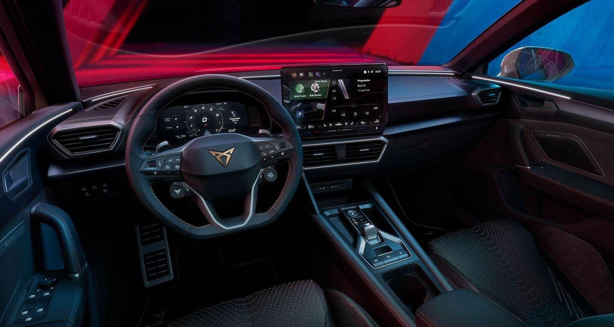

Almost seven years designing the in-car infotainment for SEAT and CUPRA, first as UI/UX Designer and then leading the UX team. Interfaces for people who can only spare a glance.
At the start of the project I benchmarked competitors' in-car systems, both from recordings and inside the cars themselves, and gathered insights on what drivers expected, where they struggled and how they really used the system. It set the opportunities the new concept had to answer.
I led the concept sessions that defined how the new infotainment would work: its core interaction models, its navigation structure and what deserves to be one tap away while driving. Personas and journeys kept every decision tied to real driving scenarios.
Most features were shared across the Volkswagen Group brands. On top of that common platform, I worked on the experiences that had to feel uniquely CUPRA: the Home screen, the App Grid and Navigation, across the brand's range of models.
I turned concepts into detailed wireflows and interactive high-fidelity prototypes in Figma, combining touch, physical controls and voice. Together with the validation team, prototypes were tested in real vehicles and in remote sessions, and the findings fed straight into the next iteration.
Shortly after joining Bertrandt in 2021, I went from UX Designer to leading the UX team. I organised the team, defined new ways of working and centralised how design work was managed, while keeping UI, development, validation, project managers and product owners aligned, travelling to meet stakeholders when needed.